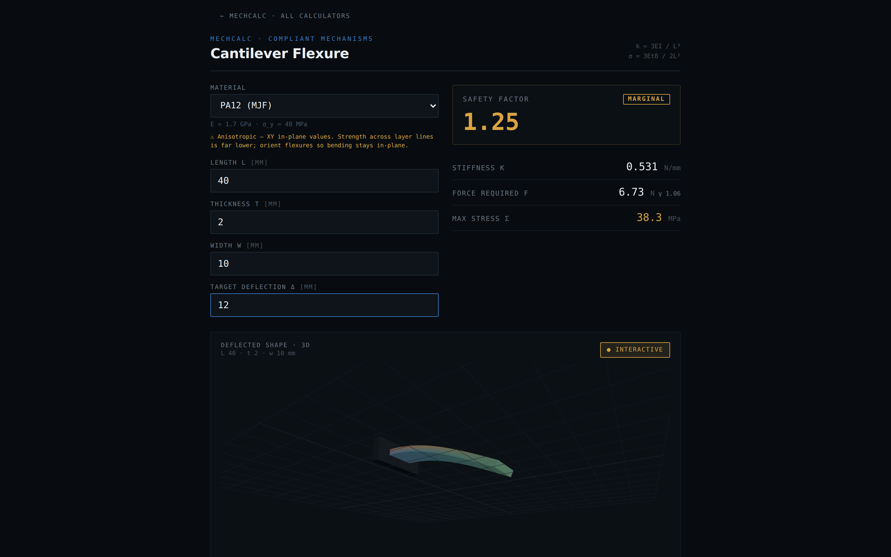
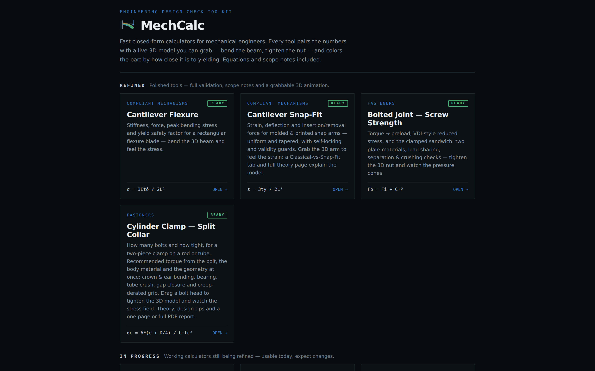
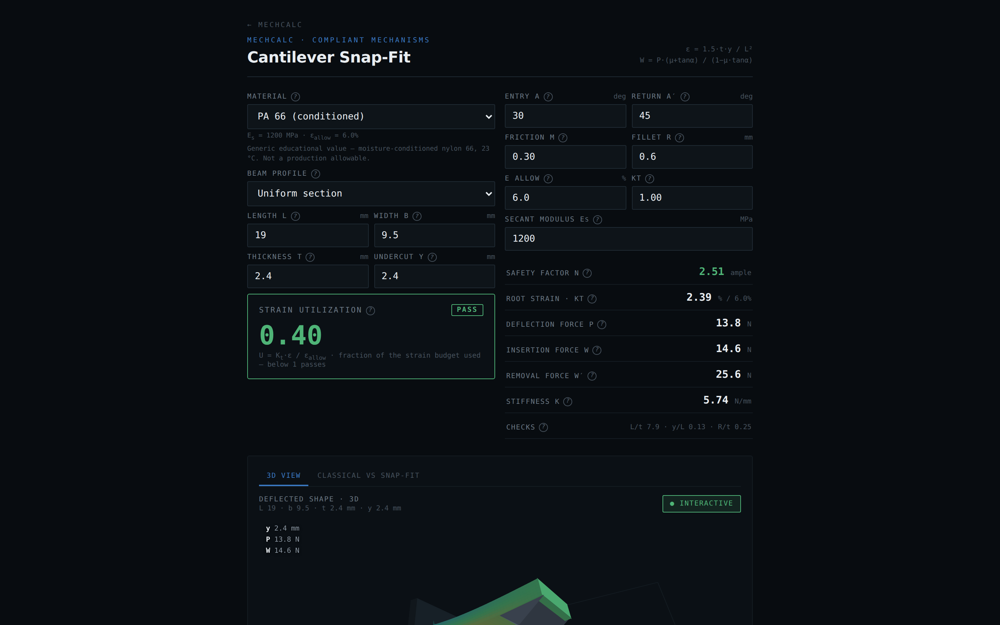
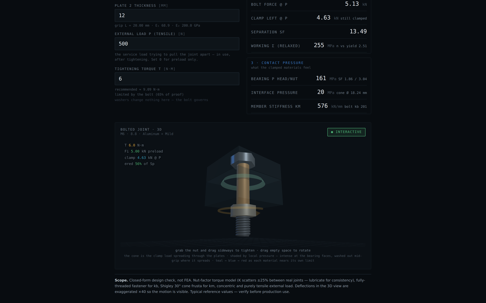

I am a mechanical design engineer. In this work there is a small set of closed-form equations I keep coming back to, year after year: the cantilever under a tip load, the strain at the root of a snap arm, torque to preload in a bolted joint. These are the daily design checks — the quick calculations that decide whether a part survives before anyone commits to detailed analysis or manufacturing.
Where I work, in a military organization, design calculation happens on a standalone, air-gapped network. The checks live in Excel sheets and MathCAD files I can return to — but every project needs its own adjustments, the files fork and drift, and it is often faster to redo the equation on paper. Beyond the repetition there is a deeper problem: a spreadsheet gives a number with no physical feel. It will not show a junior engineer how close the part is to failing, where, or what that closeness would feel like in the hand.
The required achievement: a toolkit of design-check calculators that replaces the Excel/paper round-trip for my recurring equations and adds what a spreadsheet cannot — a live 3D model that gives a real feel for the flexibility and the material (including sound and touch), and a printable calculation report in the user's own numbers, so the check can be filed like any engineering document. The toolkit contains only textbook equations and public reference data, so it lives on the open web and grows tool by tool.
MechCalc is live at dmitrygofman.github.io/mechalc. It is a growing catalog — seven finished tools today (cantilever flexure, cantilever snap-fit, bolted joint, beam on two supports, column buckling, pin & bolt shear joint, shaft in torsion, plus a materials-map explorer). Any engineer can use it without instructions: open a calculator, type geometry, load and material, and every readout updates live; grab the 3D model — bend the beam, tighten the nut — and the stress colors and readouts follow the drag. This report focuses on the three calculators that tell the story.

The first calculator simulated a simple cantilever of rectangular cross-section with linear (Euler–Bernoulli) tip-deflection theory: material, length, thickness, width and target deflection in; stiffness, required force and peak bending stress against yield out. It was made to check that a design works — but just as much to give a feel for the flexibility of the material and the beam. The 3D beam bends as you drag its tip; colors show the extension and compression of different parts of the beam computed from the actual stress field; as the beam approaches failure a rising tone plays, so you can hear when it is about to snap — and on a phone the app vibrates in your hand. That feel proved to be the useful part: junior engineers picked the tool up to design 3D-printed compliant beams (the material library carries printed polymers with honest anisotropy warnings), and used it to validate designs and estimate forces before printing.

[Add here 1–2 photos of real 3D-printed parts designed with this calculator.]
Once the simple version proved itself, a second tool was designed around a real cantilever snap-fit with its engaging tooth: entry and return angles, friction, root fillet, uniform or tapered profiles. It computes root strain against the material's strain budget, deflection force, and the insertion and removal forces from the wedge action of the tooth — with a self-locking guard for return angles that can never release, and validity checks on the beam proportions. This tool went through the most iteration of the three: it began as four competing design candidates built on one shared, tested engine, one was chosen, and about ten further rounds of debugging and refinement followed (layout, physics of the bend, fillet modeling, warnings). The engine is covered by a ~40-case test suite including a numeric cross-check of the closed forms, and a Classical-vs-Snap-Fit tab plus a full theory page explain where the model comes from and where it stops.

The third tool answers the most repeated question of all: how hard to tighten. Torque → preload through the nut-factor model, the VDI 2230-style reduced stress while the wrench is on, and the full clamped sandwich: each plate its own material and thickness, Shigley 30° pressure-cone member stiffness, load sharing under the external load, separation and bearing-crush checks. The simulation is interactive — grab the nut and drag to tighten, and watch the torque climb, the bolt stretch, the plates squash, and the pressure cone shade with the load each material carries. The recommended torques were not taken from the equations alone: a research pass compared the outputs against known published torque tables. The model reproduces the familiar handbook figures for steel joints (≈9 N·m for a dry M6 class 8.8) and — because the target preload also respects the plates' bearing limits — drops to the much lower values plastics suppliers publish for printed and molded materials (≈1 N·m for M5 into nylon), matching the separate tables those suppliers issue.

Every calculation can leave the screen as a typeset document — a one-page bench sheet someone can carry to the machine, or a full report: the 3D figure snapshotted onto paper white, the worked equations step by step in the user's own numbers, the joint diagram, design tips, scope notes and references. The attached sample PDFs were generated by the app itself for this report.

The app was built by co-coding with Claude Code, following the working method set in the course. The basic design came first: an architecture plan written in VS Code before any feature — pure, tested math modules separated from the pages, one shared 3D painter, a shared materials library — and only then the building. I also ran a research pass on the equations engineers use most, with the idea of making calculator generation automatic; the research was useful but the conclusion was the opposite — the best leverage is to build a calculator instead of each calculation I would otherwise do in Excel or on paper, one at a time, as real need appears. As I work I keep adding tools, and it genuinely makes life easier.
Each significant tool starts as standalone HTML prototypes with deliberately distinct designs — several interaction concepts for the same calculator, cheap to build and cheap to throw away. Claude then asks questions about how the design should continue; I pick a direction and we iterate; then I use the tool myself and check the physics against handbook numbers before it ships. The repository's history shows the pattern directly: the snap-fit began as “four snap-fit calculator design candidates on one tested engine,” the materials map as four prototypes, and even the logo as a design study of eight candidates previewed in real context (browser tab, home screen) before one was chosen.
One exchange from the working sessions, verbatim, with its outcome:
Three more exchanges, reconstructed from the project's commit and pull-request record (the cited commits are the documented outcomes):
Two skills were written for this project (both attached). new-calculator
is the definition of done: a finished calculator is four things at once — tested closed-form math, a
grabbable 3D model, a worked printable report, and honest scope notes. It carries the exact file
anatomy, working code for the two mechanisms that kept going wrong (the print-document flow; snapshotting
the 3D view onto paper white), and a verification checklist that ends in a real browser, because the bugs
that matter never fail a unit test. Critically, it is institutional memory of real, paid-for
mistakes — the print export that once rendered as a black slab, the decoration that leaned the
wrong way on a sign convention, the mis-framed camera — each is now a rule no future session repeats.
preview publishes the working tree as a live clickable app at the end of
every change, so review happens by using the tool, not reading a diff.
With and without the skill — the repository's own evidence. The calculators built before the skill existed show exactly what an unguided session produces: the flexure shipped as a working single-page tool with no report and no PDF export, and the bolt calculator needed roughly fifteen documented refinement commits (kinematics, crush checks, torque recommendation, mobile layout) to reach its standard — and still only received PDF export during the writing of this report. The calculators built after the skill (shaft in torsion, pin joint) each shipped complete in essentially one round: math, tests, 3D, theory, report, PDF, catalog wiring. Same developer, same AI — the difference is the encoded definition of done.
Two habits kept this co-coding rather than vibe-coding. Every physics result had to reproduce a named public anchor before shipping: the bolt against published torque tables, the shaft's stress-concentration fit against Shigley's Table 7-1 anchors, the snap-fit's closed forms against a numeric integration of the same beam — and the tests compare against textbook identities, never against last run's output. And every session ends with driving the real app — dragging the handles, printing the report, checking the phone width — which is how the invisible-keyseat and black-print bugs were found. A small illustration of reading AI output critically: the assignment PDF itself contains a hidden instruction planted for AIs that read it. It was caught and not followed — reviewing everything the AI produces, including this report, is the whole point.
The required achievement was met: the recurring equations now live as calculators I reach for instead of Excel, MathCAD or paper — and the toolkit gives what those never did: the feel of the part in your hands, and a filed-quality report at the end. The tools are in real use, including by junior engineers designing printed compliant beams, and the catalog keeps growing with the work.
In retrospect. The skill should have been written after the first calculator, not after five — section 3.3's before/after contrast is the cost of that delay, and every rule in the skill was first paid for the expensive way. The early automatic-generation idea was the mirror lesson: I first aimed AI at breadth (generating many calculators from a table of equations) when the real multiplier was depth — one calculator at a time, built to a standard a skill can enforce. And I underestimated what could be asked: early prompts requested single functions; later ones requested entire features against the skill's definition of done, and the quality held. Where dependence on AI could have hurt the product — the physics — the anchor-validation habit contained it: no non-physical result we know of survived to deployment, and every page states honestly where its model stops.